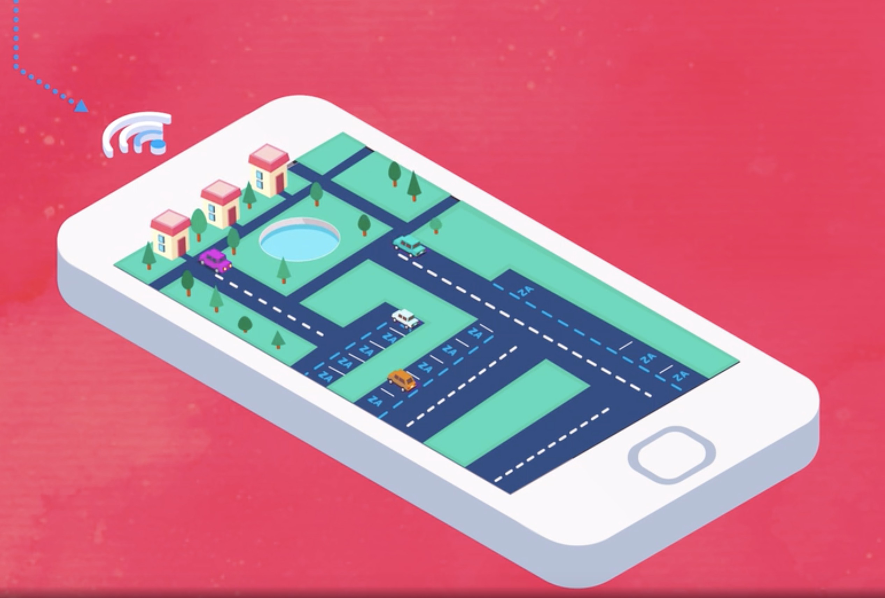

|  | |

|
Museum exhibition bookEditorial design of the book "Intimate voices. Stories and images of female artists" exhibition at National Museum in 2016 - 2017 RoleEditorial Designer |
Café Linaje ColombianoBrand identity creation, concept, naming, brand research, visual identity of the coffee company. “Linaje Colombiano” wants to communicate heritage, tradition and the roots within their production throughout the generations. That is why its name Linaje (lineage)and its communication. RoleArt Direction - Graphic Designer |

|

|
Productos FlorestaRebranding, concept development, UX/UI Interface design, web design. Case of study of Cleaning and Manteinance products factory "Productos Floresta". This project wants comunicate to users an environmental friendly brand also given them an interface where they can review the products and request a quote.From printable to digital products portfolio RoleUX/UI - Web Designer |
Banco de la RepúblicaEditorial design of the catalogue of " Hernán Díaz. Revelado retratos, sesiones y hojas de contacto" exhibition at Banco de la República Luis Angel Arango Library in 2015-2016. (AZ Studio Ana Vélez - Art Direction). RoleEditorial Designer |

|

|
Okobo GroupRebranding, concept development. Case of study: external trade company that wants to communicate users three multiple solutions that they can offer in external trade where Okobo is the right choice for doing it. RoleArt Direction - Graphic Designer |
Entre OjosThe opportunity to run our own design studio was a really challenging experience. We were a team of three designers where each one contributed from their own strengths. This synergy allows us to get bigger projects with important firms in Colombia. RoleDesigner |

|
|
|
Banco de la RepúblicaInfographic for the 90 years of Banco de la República where we could explain in a public exhibition at Luis Angel Arango Library all The Banco de la República processes, which includes the manufacturing process of coins and bills besides the process to borrow a book from the Library collection RoleDesigner |